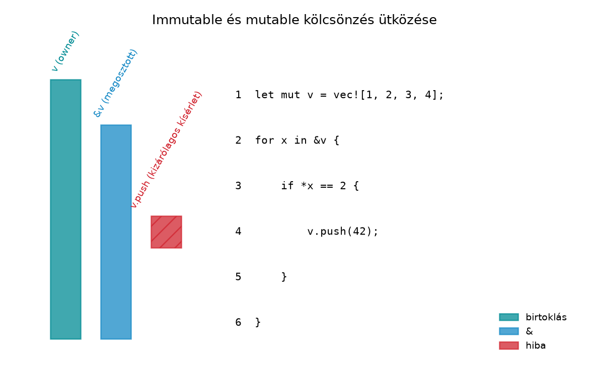

Tapasztalt C++-fejlesztőként pontosan ismered az
aliasing-problémákat. Klasszikus példa az iterátor-invalidálás, amikor
egy std::vector-on iterálsz, és közben
push_back-et hívsz:
#include <vector>
#include <iostream>
int main() {
std::vector<int> v{1, 2, 3, 4};
for (int& x : v) {
if (x == 2) {
v.push_back(42); // UB: push_back reallokálhat, x érvénytelenné válik
}
}
}Ez nem fordítási hiba, hanem definiálatlan viselkedés (undefined
behavior, UB): a v.push_back(42) reallokálhat, és a ciklus
x referenciája, illetve az iterátor érvénytelenné válik.
Vigyázat: nem minden C++-aliasolás hiba. Az, hogy egy
const T& és egy T& ugyanarra az
objektumra mutat, szabályos és (egyszálú kódban) jól definiált C++; a
const T& csak azt ígéri, hogy ezen a referencián
át nem írunk, azt nem, hogy az érték más úton nem változhat. A
valódi hibák az érvénytelenített hivatkozás (mint fent) és a szálak
közötti adatverseny.
A Rust válasza egy statikus szabály, a kölcsönzési
szabály, amely a kód szintaktikai szerkezete alapján
garantálja, hogy ilyen helyzet soha nem fordulhat elő. A szabály
megszegése nem UB, hanem fordítási hiba, például E0502. Ez
a szabály alapozza meg a nyelv memória- és szálbiztonsági
garanciáit.
Továbbvitt eredmény. Az itt bevezetett kölcsönzési szabály a későbbi alfejezetek alapja: a A borrow checker működése: non-lexical lifetimes és tipikus javítások alfejezet a szabály hatókör-kezelését, a Élettartam-annotációk és az elision szabályai alfejezet az élettartamok explicit jelölését, a Belső mutabilitás: Cell, RefCell és a futásidejű kölcsönzés alfejezet a szabály megkerülésének ellenőrzött eseteit, a Szálak, Send és Sync: data race fordítási időben kizárva alfejezet pedig a szálbiztonságra való kiterjesztést tárgyalja.
Definíció. A referencia (reference) egy olyan típus, amely egy meglévő értékre mutat, anélkül hogy átvenné annak tulajdonjogát. A Rustban két referencia-típus van:
&T – megosztott referencia (shared
reference): olvasási hozzáférést ad; a hivatkozott érték nem módosítható
ezen a referencián keresztül (kivéve a belső mutabilitást, lásd
később).&mut T – kizárólagos referencia
(mutable/exclusive reference): olvasási és írási hozzáférést ad; a
kölcsönzés ideje alatt senki más nem férhet a hivatkozott értékhez.Definíció. A kölcsönzés (borrowing)
az a művelet, amikor egy érték tulajdonosa átmeneti hozzáférést ad egy
referencián keresztül, de megtartja a tulajdonjogot. A kölcsönzés a
& (kölcsönzés megosztott hivatkozásként) és a
&mut (kölcsönzés kizárólagos hivatkozásként)
operátorokkal történik.
Szabály. Egy adott értékre vonatkozóan egy időpillanatban:
&T létezhet,
vagy&mut T
létezhet.A két fajta referencia egyszerre nem lehet érvényben ugyanarra az értékre. Ezt a szabályt a kölcsönzés-ellenőrző (borrow checker) statikusan, fordítási időben ellenőrzi.
A referencia típusa soha nem lehet null. Ha hiányzó
referenciát akarunk reprezentálni, az Option<&T>
vagy Option<&mut T> típust használhatjuk, ahol a
None a hiányzó eset.
A referencia nem élheti túl a hivatkozott értéket; ezt a szabályt a
fordító az élettartamok (lifetimes) alapján ellenőrzi. Ebben az
alfejezetben csak annyit használunk, hogy a kölcsönzés hatóköre a
referencia utolsó használatáig tart (non-lexical lifetimes,
NLL). Ez a referenciák kölcsönzési tartományára vonatkozik; a
Drop-ot implementáló, erőforrást őrző értékek (például a
RefCell::borrow() által visszaadott Ref vagy a
MutexGuard) a hatókörük végéig élnek, függetlenül attól,
hogy az utolsó olvasásuk hol volt (lásd A borrow
checker működése). A részletes élettartam-annotációk a Élettartam-annotációk és az elision szabályai
alfejezetben (8.1) jönnek.
Vegyünk egy egyszerű C++ példát, ahol egy függvény módosít egy egész számot, egy másik pedig csak olvassa.
void add_one(int& x) {
++x;
}
void print(const int& x) {
std::cout << x << '\n';
}
int main() {
int a = 10;
add_one(a); // nem-const referencia
print(a); // const referencia
// Aliasing: szabályos és definiált C++. A const referencia csak a saját
// elérési útról ígér csendet, az értéket más úton módosíthatja valaki:
// int* p = &a;
// add_one(*p); // rendben, nincs UB (egyszálú kódban)
// print(a); // a már 12; a const ref nem garantálta az állandóságot
}A Rust megfelelője:
fn add_one(x: &mut i32) {
*x += 1;
}
fn print(x: &i32) {
println!("{x}");
}
fn main() {
let mut a = 10;
add_one(&mut a);
print(&a);
// Ez lefordul (NLL): a p-t a módosítás után már nem használjuk,
// így a megosztott kölcsönzés az add_one előtt véget ér.
let p = &a;
print(p);
add_one(&mut a);
}A kölcsönzési szabály akkor sérül, ha a megosztott referenciát a módosítás után is használnánk:
Kódblokk — önálló példa · szándékosan hibás
· várt hiba: E0502
(cannot borrowaas mutable because it is also borrowed as immutable)
fn add_one(x: &mut i32) {
*x += 1;
}
fn main() {
let mut a = 10;
let p = &a;
add_one(&mut a); // E0502: p még él, mert alább használjuk
println!("{p}");
}A két változat között egyetlen különbség van: az, hogy a
p utolsó használata a &mut a előtt vagy
után áll. A non-lexical lifetimes (NLL) miatt a kölcsönzés nem a blokk
végéig, hanem az utolsó használatig tart.
A különbség lényege: C++-ban a const int& arra utal,
hogy a hivatkozott objektumot az adott referencián keresztül nem
módosíthatjuk, de más aliasok még módosíthatják. A Rust
&T referencia ennél erősebb: a kölcsönzési szabály
garantálja, hogy a kölcsönzés ideje alatt senki nem
módosíthatja az értéket, mert &mut T nem létezhet
mellette. Ez a statikus invariant teszi lehetővé, hogy a Rust kód
biztonságosan párhuzamosítható legyen, és hogy a fordító agresszívan
optimalizálhasson.
Készítsünk egy kis Rust projektet, amelyben megpróbáljuk lefordítani a C++ UB-s kód Rust megfelelőjét.
Munkakönyvtár: ~/rust-labor/r014/
Hozd létre a projektet, és írd be a hibás Rust kódot.
mkdir -p ~/rust-labor
cd ~/rust-labor
cargo new r014 --bin
cd r014A src/main.rs tartalma – ez a változat szándékosan nem
fordul le:
fn main() {
let mut v = vec![1, 2, 3, 4];
for x in &v {
if *x == 2 {
v.push(42); // hiba: v kizárólagos kölcsönzése ütközik a &v megosztott kölcsönzéssel
}
}
println!("{v:?}");
}A cargo run parancs kiadása után a fordító a következő
lényegi hibát jelzi (a pontos szöveg verziófüggő):
error[E0502]: cannot borrow `v` as mutable because it is also borrowed as immutable
--> src/main.rs:6:13A hiba oka: a for x in &v megosztott kölcsönzést hoz
létre v-re, amely a ciklus teljes futása alatt él. A ciklus
törzsén belül a v.push(42) kizárólagos kölcsönzést próbál
szerezni, ami ütközik a még élő megosztott kölcsönzéssel. Ez pontosan az
a helyzet, amely C++-ban UB-t okozna; Rustban fordítási hibát
kapunk.
A következő diagram mutatja a kölcsönzések érvényességi tartományát a hibás kódban.

A megosztott kölcsönzés a ciklusfejben kezdődik (1. sor) és a ciklus
végéig tart (5. sor). A push hívás a 3. sorban próbál
kizárólagos hozzáférést, ezért a két sáv átfedi egymást, ami hiba.
Javítás. A cél az, hogy a kizárólagos hozzáférést csak a megosztott kölcsönzés lejárta után kérjük. Egy idiomatikus megoldás: először gyűjtsük össze, hogy szükség van-e a beszúrásra, majd a ciklus után módosítsuk a vektort.
fn main() {
let mut v = vec![1, 2, 3, 4];
let mut needs_push = false;
for &x in &v {
if x == 2 {
needs_push = true;
}
}
if needs_push {
v.push(42);
}
println!("{v:?}");
}Ez a változat legfeljebb egy 42-t szúr be,
akkor is, ha több 2-es volt (a needs_push bool
csak azt jegyzi, hogy volt-e). Ha minden 2 után kell egy
42, a vektort új vektorba építjük:
let v: Vec<i32> = v.into_iter().flat_map(|x| if x == 2 { vec![x, 42] } else { vec![x] }).collect();
(a [1, 2, 2, 4]-ből [1, 2, 42, 2, 42, 4]
lesz).
A for &x in &v ciklusban a megosztott kölcsönzés
csak a ciklus végéig él. A ciklus után a v.push(42) már
megkaphatja a kizárólagos kölcsönzést, mert az előző megosztott
kölcsönzés lejárt. A program kimenete:
[1, 2, 3, 4, 42]Ez a minta – ellenőrzés megosztott hozzáféréssel, majd módosítás
kizárólagos hozzáféréssel – rendkívül gyakori idiomatikus Rust kódban. A
hibaüzenetek (E0502) olvasása és a javítási stratégia a A borrow checker működése alfejezetben mélyebb
tárgyalást kap.
C++-ban megszokott, hogy ha egy függvény módosítani akar egy értéket,
akkor referenciát vagy mutatót adunk át. Rustban sokan a
clone()-hoz nyúlnak, hogy elkerüljék a kölcsönzési
hibákat:
fn process(v: &Vec<i32>) {
let mut copy = v.clone(); // a kölcsönzési hiba elkerülése
copy.push(42);
println!("{copy:?}");
}Ez lefordul, de nem azt érjük el, amit szeretnénk: ha az eredeti
v-t akartuk módosítani, a klón módosítása nem hat rá. A
helyes megoldás az, hogy a függvény &mut Vec<i32>
paramétert kap, és azon dolgozik. A felesleges klónozás teljesítmény- és
karbantartási problémákat okoz, ráadásul elfedi a tervezési hibákat.
Rc<RefCell<T>> túlhasználata C++-os
shared_ptr reflexbőlA C++-fejlesztők gyakran a std::shared_ptr-hez hasonló
megoldást keresnek, amikor megosztott, módosítható állapotra van
szükségük. Rustban ez az Rc<RefCell<T>> vagy
Arc<Mutex<T>> mintát jelenti. Azonban ezt csak
akkor használd, ha valóban megosztott tulajdonra van szükség; a
RefCell futásidejű kölcsönzés-ellenőrzést végez, így a
fordítási hibák futásidejű pánikká alakulhatnak. A Belső mutabilitás: Cell, RefCell alfejezet ezt
részletesen tárgyalja.
Sokan azt hiszik, hogy egy &mut kölcsönzés a teljes
blokk végéig tart. Valójában a non-lexical lifetimes miatt a kölcsönzés
csak az utolsó használatig él. Például:
fn main() {
let mut v = vec![1, 2, 3];
let r = &mut v[0];
*r += 1; // r utoljára itt használt
println!("{v:?}"); // ez lefordul, mert a &mut kölcsönzés lejárt
}Régebbi Rust-verziókban ez hibát adott volna, de a NLL bevezetése óta
a fordító megérti, hogy r már nem használt, így a
kölcsönzés nem él a println!-ig. Ez a viselkedés fontos az
idiomatikus Rust kód írásához; részletek a A borrow
checker működése alfejezetben.
Az alábbi Rust kód vajon lefordul-e? Válaszodat indokold a kölcsönzési szabállyal.
fn main() {
let mut s = String::from("hello");
let r1 = &s;
let r2 = &mut s;
println!("{r1}");
}Adott a következő C++ kód, amely egy vektor páros elemeit megduplázza:
#include <vector>
int main() {
std::vector<int> v{1, 2, 3, 4};
for (int& x : v) {
if (x % 2 == 0) {
x *= 2;
}
}
}Írd át ezt idiomatikus Rustra, amely lefordul, és ugyanazt az eredményt adja. Ügyelj arra, hogy a Rust kód a kölcsönzési szabálynak megfelelően módosítsa az elemeket.
append_unique függvényÍrj egy
append_unique(v: &mut Vec<i32>, value: i32)
függvényt, amely a value értéket csak akkor fűzi hozzá a
v-hez, ha az még nincs benne. A függvény ne klónozzon, ne
használjon contains-t úgy, hogy közben módosítja a vektort,
hanem használja ki a kölcsönzési szabályt helyesen. Gondolj arra, hogy a
contains megosztott kölcsönzést vesz igénybe, ami a
kifejezés végén lejár.
Ez a minta később az rkv MemStore implementációjában is
felbukkan, amikor egy kulcs létezését ellenőrizzük a beszúrás előtt.
Az alábbi Rust kód szándékosan nem fordul le
(E0502):
fn double_even(v: &mut Vec<i32>) {
for x in v.iter() {
if x % 2 == 0 {
v.push(*x); // hiba: az iterátor megosztott kölcsönzése még él
}
}
}Javítsd ki a kódot úgy, hogy leforduljon, a páros elemek másolatai a vektor végére kerüljenek, és a ciklus előre ismert hosszúságú maradjon (ne legyen végtelen). Magyarázd el, miért oldja meg a javítás a kölcsönzési hibát, és miért nem végtelen a ciklus.
A kód nem fordul le. A hiba oka, hogy az
r1 megosztott kölcsönzést hoz létre s-re, és
ez a kölcsönzés a println!-ben való felhasználásig él. Az
r2 kizárólagos kölcsönzést próbál szerezni, miközben
r1 még érvényben van. A szabály szerint egyszerre nem
létezhet &T és &mut T. Ha az
r1-et nem használnánk az r2 létrehozása után,
akkor a non-lexical lifetimes miatt r1 lejárhatna, és az
r2 létrehozása már legális lenne – de ebben a sorrendben
nem.
fn main() {
let mut v = vec![1, 2, 3, 4];
for x in &mut v {
if *x % 2 == 0 {
*x *= 2;
}
}
println!("{v:?}");
}A for x in &mut v kizárólagos kölcsönzést hoz létre
a vektor egészére, így a cikluson belül módosíthatjuk az elemeket. Az
x típusa &mut i32, ezért a dereferálással
(*x) férünk hozzá az értékhez. A ciklus végén a kölcsönzés
lejár, és a println! már megosztott kölcsönzést használhat.
A kimenet: [1, 4, 3, 8].
append_unique függvényfn append_unique(v: &mut Vec<i32>, value: i32) {
if !v.contains(&value) {
v.push(value);
}
}
fn main() {
let mut v = vec![1, 2, 3];
append_unique(&mut v, 4);
append_unique(&mut v, 2);
println!("{v:?}"); // [1, 2, 3, 4]
}A v.contains(&value) megosztott kölcsönzést vesz
igénybe, amely a kifejezés kiértékelése után azonnal lejár. A
v.push(value) már kizárólagos kölcsönzést kér, ami ekkor
már legális. Ez a minta – ellenőrzés, majd módosítás – idiomatikus, és
elkerüli a klónozást és a RefCell-t.
A hiba oka: a v.iter() iterátora megosztott kölcsönzést
tart a vektoron a teljes ciklus alatt, a push viszont
kizárólagos kölcsönzést kér, és reallokációval érvényteleníthetné az
iterátort. Ez pontosan a C++ iterátor-invalidálása, amelyet a Rust
fordítási időben kiszűr. A javítás: index alapú ciklus, rögzített
hosszal.
fn double_even(v: &mut Vec<i32>) {
for i in 0..v.len() {
if v[i] % 2 == 0 {
v.push(v[i]);
}
}
}Ez lefordul. A 0..v.len() tartomány egyszer, a ciklus
elején értékelődik ki, a Range értéke a későbbi
push-októl nem változik, ezért a ciklus csak az eredeti
elemeken megy végig. A v.push(v[i]) pedig a kétfázisú
kölcsönzés (two-phase borrow) miatt szabályos: a push
implicit &mut v fogadója az argumentum kiértékelése
alatt csak „foglalt”, ezért a v[i] olvasása (amely egy
i32-t másol ki) még megengedett, és a kizárólagos
kölcsönzés csak a hívás pillanatában aktiválódik. Ugyanez teszi lehetővé
a hivatalos példát, a v.push(v.len())-t is (lásd A borrow checker működése: non-lexical lifetimes és
tipikus javítások). Olvashatóság szempontjából egyenértékű
alternatíva a let val = v[i]; v.push(val);, amely a
másolást kifejezetten mutatja.
A Rust két referencia-típusa a &T (megosztott) és a
&mut T (kizárólagos). A kölcsönzési
szabály szerint egy értékre egyszerre akárhány
&T létezhet, vagy pontosan egy &mut T,
de a kettő egyszerre nem. A szabály megszegése fordítási hibát okoz
(leggyakrabban E0502), nem definiálatlan viselkedést. Ez a
szabály zárja ki az olyan C++-os hibákat, mint az iterátor-invalidálás
vagy az egyszerre konstans és nem-konstans hivatkozás ugyanarra az
objektumra. A non-lexical lifetimes miatt a kölcsönzés hatóköre az
utolsó használatig tart. A szabály alapozza meg a későbbi alfejezeteket:
a A borrow checker működése a hatókör-kezelést,
a Élettartam-annotációk az explicit
élettartamokat, a Belső mutabilitás a
kivételeket, a Szálak, Send és Sync pedig a
szálbiztonsági kiterjesztést tárgyalja.
A nyelv szabályait a Rust Book (https://doc.rust-lang.org/book/) és a Rust Reference (https://doc.rust-lang.org/reference/) írja le. A fordító
hibaüzenetének szövege verziófüggő, ezért a fejezet a hibakódot
(E0502) és a hiba lényegét közli. A non-lexical lifetimes
viselkedése a Rust 2018-as edition óta stabil; a pontos
hatókörmegállapítás részleteit a A borrow checker
működése alfejezet tárgyalja. Ebben az alfejezetben külső crate-et
nem használunk.